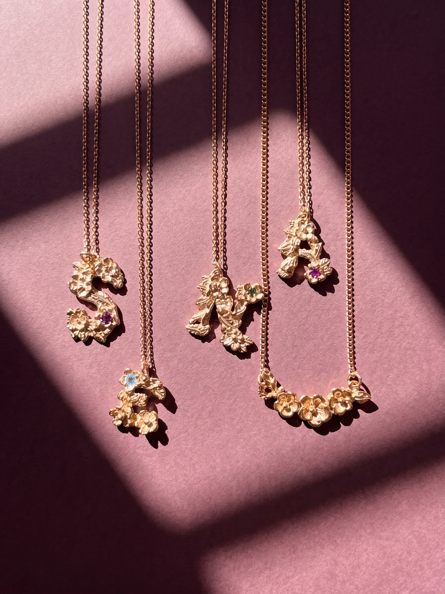
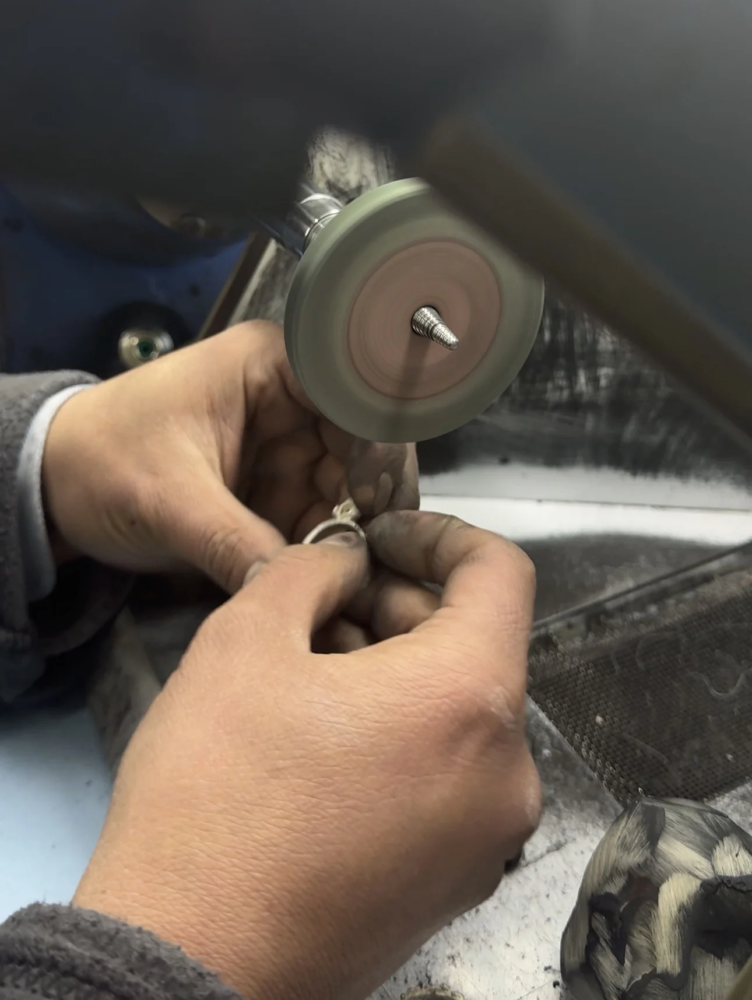

Our Story

The Beginning
Born in the Grand Bazaar
Rosary was born from a lifelong fascination with the art of goldsmithing. In the labyrinthine corridors of Istanbul's Grand Bazaar — one of the oldest and largest covered markets in the world — we found our home.
Our atelier sits within these historic walls, where the sound of hammers on gold has echoed for over five centuries. Here, surrounded by the vibrant energy of a marketplace that has connected East and West since 1461, we craft each piece by hand.

The Craft
Ancient Techniques, Modern Vision
Every Rosary piece begins as a sketch inspired by the rich visual tapestry of Istanbul — from Ottoman floral motifs to the geometric patterns of Byzantine mosaics. These designs are then brought to life using techniques that have been refined over generations.
Lost-wax casting, hand granulation, filigree work — these are not just methods to us, they are a language. A language spoken by the master artisans who mentored us and by the centuries of goldsmiths who came before.
We use only fine gold and carefully sourced gemstones, ensuring that each piece is as precious in its materials as it is in its making.

The Atelier
A Workshop Steeped in History
The Grand Bazaar is more than our address — it is our inspiration. With over 4,000 shops spread across 61 covered streets, it is a living museum of craftsmanship. Our atelier occupies a space where goldsmiths have worked for generations, and the walls still carry the warmth of countless fires and the quiet pride of work done well.
Visitors to Istanbul are welcome to visit our workshop, watch our artisans at work, and experience firsthand the process behind each Rosary creation. There is something irreplaceable about seeing a piece come to life — from raw gold to a finished jewel — in the hands of a master craftsman.
Get in Touch
Istanbul, Turkey
Have a question about a piece, want to discuss a custom design, or simply curious about how we work?
Get in Touch